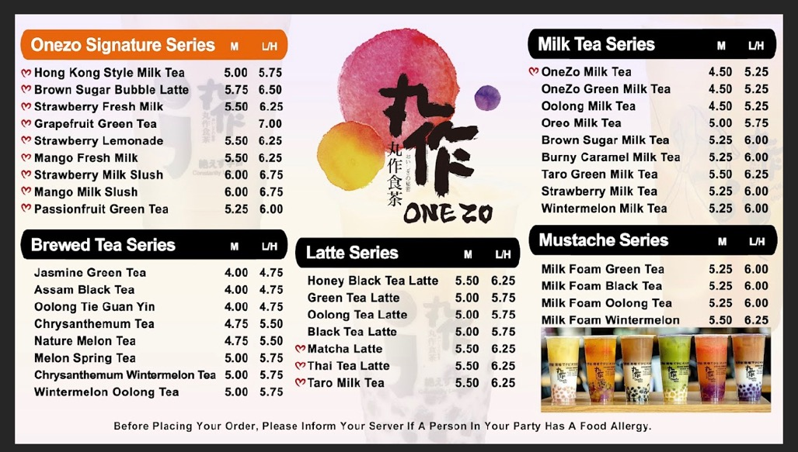

Moge Tee
Address:71 N Pleasant Street Amherst, MA 01002
Phone:(413) 835-0628
At Moga Tea, They are not just about serving bubble tea; they are all about creating an experience that will make your taste buds dance! 🎉
As soon as you step inside, you will be greeted by a cozy, colorful atmosphere that invites you to sit back, relax, and sip on something oh-so-delicious.
Whether you're catching up with friends or just need a little me-time, this place is a perfect breather from the hustle and bustle of life.
#Their Drink Menu: A Flavor Explosion!
 # Moge Reviews from the Boba Community 🥳
Here is what customers have to say:
- **Nick S.** says: "Boba is alright I guess. The price is a bit off-putting as it is around $7-9 a drink, which is normal for Boba nowadays but for the quality of the tea they provide, I feel like it should be a bit cheaper to match other chains. There is also one boba (Dragonfruit) that is around $10, which I didn't think was worth that price.
The service is alright, they were typically busy when I visited, so they had a lot of orders to take care of. The atmosphere is nice, good study location or hang out place.
The mobile kiosks are placed in an awkward position that makes it hard to get around if there is a big line, but it does make ordering a bit easier.
Overall its a good location for boba in the area."
- **Adina S ** shares : "Boba is alright I guess. The price is a bit off-putting as it is around $7-9 a drink, which is normal for Boba nowadays but for the quality of the tea they provide, I feel like it should be a bit cheaper to match other chains. There is also one boba (Dragonfruit) that is around $10, which I didn't think was worth that price.
The service is alright, they were typically busy when I visited, so they had a lot of orders to take care of. The atmosphere is nice, good study location or hang out place.
The mobile kiosks are placed in an awkward position that makes it hard to get around if there is a big line, but it does make ordering a bit easier.
Overall its a good location for boba in the area."
- **Kevino C..** raves: "Cute place and convenient location. Staff were very nice and lots of available seating.
Purple yam bubble milk was not the best tasting. Strawberry bubble milk was good though and the creme brulee foam added a lot of sweetness and creaminess.
Each were about $7 which is a little pricey for its size but the cups were cute. Great boba place."
# Moge Reviews from the Boba Community 🥳
Here is what customers have to say:
- **Nick S.** says: "Boba is alright I guess. The price is a bit off-putting as it is around $7-9 a drink, which is normal for Boba nowadays but for the quality of the tea they provide, I feel like it should be a bit cheaper to match other chains. There is also one boba (Dragonfruit) that is around $10, which I didn't think was worth that price.
The service is alright, they were typically busy when I visited, so they had a lot of orders to take care of. The atmosphere is nice, good study location or hang out place.
The mobile kiosks are placed in an awkward position that makes it hard to get around if there is a big line, but it does make ordering a bit easier.
Overall its a good location for boba in the area."
- **Adina S ** shares : "Boba is alright I guess. The price is a bit off-putting as it is around $7-9 a drink, which is normal for Boba nowadays but for the quality of the tea they provide, I feel like it should be a bit cheaper to match other chains. There is also one boba (Dragonfruit) that is around $10, which I didn't think was worth that price.
The service is alright, they were typically busy when I visited, so they had a lot of orders to take care of. The atmosphere is nice, good study location or hang out place.
The mobile kiosks are placed in an awkward position that makes it hard to get around if there is a big line, but it does make ordering a bit easier.
Overall its a good location for boba in the area."
- **Kevino C..** raves: "Cute place and convenient location. Staff were very nice and lots of available seating.
Purple yam bubble milk was not the best tasting. Strawberry bubble milk was good though and the creme brulee foam added a lot of sweetness and creaminess.
Each were about $7 which is a little pricey for its size but the cups were cute. Great boba place."
Onezo Tea
Address:71 N Pleasant Street Amherst, MA 01002
Phone:(413) 835-0628
Welcome to Onezzo Bubble Tea! 🍵✨
Hey there, bubble tea enthusiasts! Ready to take your taste buds on a flavor-filled adventure?
At Onezzo Bubble Tea, They are all about bringing you the most delightful bubble tea experience around! From rich, creamy milk teas to refreshing fruit infusions, their wide range of flavors will have you coming back for more.
Not to mention, their perfectly chewy boba is made fresh daily, ensuring every sip is a burst of joy!
#Their Drink Menu: A Height of Ectasy!

LimeRed Teahouse
Address:50 Main Street Amherst, MA 01002
Phone:(413) 200-8327
Here are some Reviews:
-**Scott Danek**Says: "Nice people and tasty bubble tea, but you have about a 50% chance of getting one each time you go.
In my last handful of visits:
- Put in an order online. When picking up they were out of large straws for boba and said they would have more in a few minutes.
45 minutes later there were still no straws. Had to drink my tea while the bubbles stayed at the bottom. Bummer.
- Put in an order online during their stated business hours.
Order accepted, card charged. Walked up to the location to find them closed with a locked door, lights off, stools up on tables. No bubble tea. Bummer.
Fortunately later got refunded.
- Put in an order online. When I showed up there were about 7 customers hanging around, with no one who worked there on location.
Other customers said the employee had to step out and would be back in about 15 minutes. I guess I should have just made my own tea?
I want to love this place, but they really need to step up on running a reliable food establishment."
-**Christine Polanco **Shares: "Slow to get my order, but worth the wait. Might be the best bubble tea shop in town.
The assam milk tea was delicious."
#Their Drink Menu: A fantastic Taste!

Absolute Zero
Address:7229 MAIN ST NORTHAMPTON, MA
Phone:413-727-8926
What some customers have to say :
-**Ivy Eng-Szeto ** says :"6 months ago. Everything my friends and I had were absolutely delicious.
My friend and I shared a crepe and ice cream.
The crepe was better than the one I recently had in Queens, NY. The staff was friendly.
I highly recommend this place!"
-**Daniel Lopez** says :"Absolute Zero’s seasonal ice cream flavors were interesting as I was stuck between 3 options but I ended up with the death by chocolate.
Tasty but nothing special if I’m being honest.
It didn’t really justify the long wait in line and long wait for our order to be ready.
Staff was nice but seemed rushed with the surge of customers that came in.
Located nicely in front of a park to eat the ice cream on a nice hot day."
# Their Fabulous Menu :
Little Heaven
Address:8CWG+8P Hadley, Massachusetts
Phone:+1 (646)361-0107
Thoughts of Customers :
-**Mario L** shares: "3 months ago ,Came all the way from New Mexico and have tried bobas in a lot of places.
The drinks here are delicious, flavors are consistent, service is amazing, and they have cute cups! The BEST Boba in Massachusetts!!!
We are going to miss this place when we return to NM. The owner is the sweetest person and she really cares about her customers."
-**Amber T Nguyen** comments:" The best boba/ice cream in the Amherst-Hadley region.
Amherst has many boba shops but NONE as good in quality as Little Heaven.
The menu is extensive and the drinks always hit without fail. I would go here every day if I had the funds!!!"
# Their Classic and Seasonal Menu :
Ten One Teahouse
Address: 8WX8+P9 Boston, Massachusetts
Phone:+1 (774)371-3195
Here are some reviews :
-**Jay P** says :" Quick service, fresh boba, tasty fruit teas, and good seating."
-**Maya Damiano** shares :" I love the atmosphere here, so modern and the perfect place to sit down and do homework for a few hours!
The staff are really nice and helpful, even when it’s crazy busy.
I have tried quite a few drinks and they have all been amazing, but my favorites are the chocolate slush and lavender milk tea.
I love that you can change the toppings, ice, and sugar levels on drinks to get the perfect combination.
All around, my new favorite boba place in town "
# Their Balanced and Savory Menu :